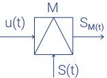

Модуляция - процесс изменения одного или нескольких параметров высокочастотного гармонического колебания по закону низкочастотного информационного сигнала (сообщения). В результате спектр управляющего сигнала переносится в область высоких частот, где передача электромагнитных сигналов посредством излучения более эффективна.
Передаваемая информация заложена в модулирующем сигнале. Роль переносчика информации выполняет высокочастотное колебание, называемое несущим (модулируемым). В качестве несущего могут быть использованы колебания различной формы (прямоугольные, треугольные и т.д.), однако чаще всего применяются гармонические колебания.
Модуляция осуществляется в устройствах модуляторах. Условное графическое обозначение модулятора имеет вид:
Использование модуляции позволяет:
В рамках одного устройства для передачи информации используются низкочастотные колебания, передача которых на расстояние свыше нескольких метров крайне затруднительна, в силу их быстрого ослабевания. Но нам все равно хочется передавать сигналы на большие расстояния, вот тут на помощь приходит модуляция.
Несущая частота S(t) модулированного колебания — частота исходного высокочастотного гармонического колебания.
Несущее колебание имеет вид S(t) = Um,0 cos(ω0t + φ0), где Um,0 - амплитуда, ω0 - частота, φ0-начальная фаза.
Основные виды модуляции в радиоэлектронике:
Аналоговым называется такой сигнал, который может быть представлен непрерывной линией из множества значений, определенных в каждый момент времени относительно временной оси.